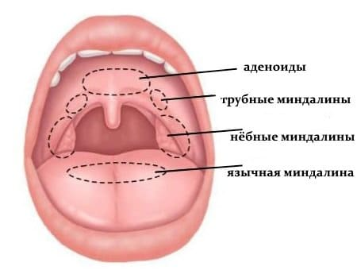
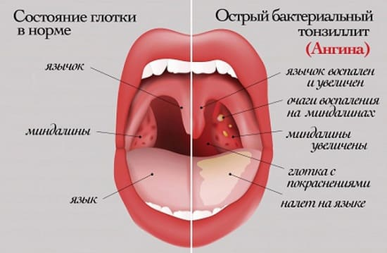
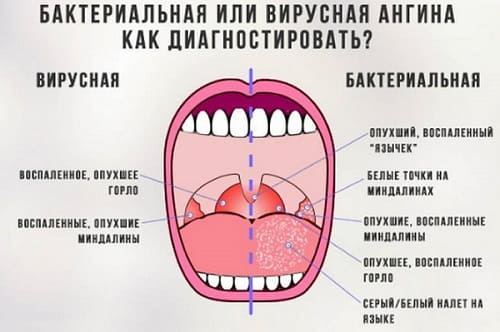
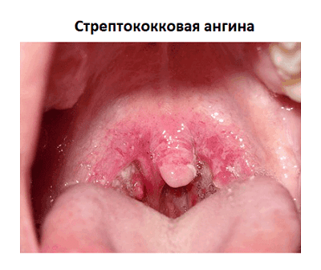
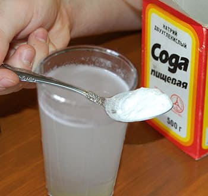
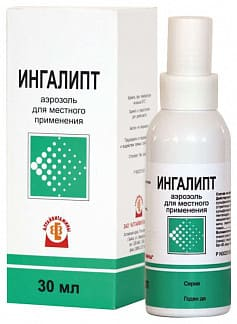

Начнем с печальной статистики: около 50 % всего нашего населения знакомы с ангиной не теоретически, а на личном опыте, т. е. ангиной лично болели. Предвижу возражения – дескать, статистика не печальная, а слишком оптимистичная и лживая, поскольку красное горло, которое болит, рано или поздно бывает у всех. В ответ на возражения замечу: 99 % населения понятия не имеет, что такое ангина, поэтому спорить не будем, а будем разбираться.
Итак, теория. Иммунитет – способность организма распознавать «чужаков» и с ними бороться. «Чужаки» – раковые клетки и возбудители инфекций. В организме имеются группы клеток, выполняющих некие общие и схожие функции, эти клетки носят название ткани. Примеры тканей – костная, мышечная, нервная, железистая. Есть клетки, ответственные за выработку иммунитета и формирующие так называемую лимфоидную ткань. Лимфоидная ткань имеется в кишечнике (и в тонком, и в толстом), в костном мозге, из нее полностью состоит вилочковая железа. Увидеть лимфоидную ткань не сложно. Для этого надо подойти к зеркалу и широко открыть рот. В глубине полости рта за дужками, что ограничивают вход в глотку, находятся полукруглые образования – миндалины.
Миндалины состоят из лимфоидной ткани, являются одним из главных органов лимфоидной системы, участвуют в выработке иммунитета и очень часто воспаляются. Почему часто? Да потому, что все вещества, попадающие в наш организм – и воздух, и пища, – контактируют, прежде всего, с миндалинами. Здесь, в полости рта, до пищевода и желудка, до гортани и легких – миндалины – передовой отряд иммунитета. Неудивительно, что отряду этому здорово и часто достается.

Воспаление миндалин носит название тонзиллита (по-латыни миндалина – tonsilla). Наиболее распространенная причина тонзиллита – всем известные острые респираторные вирусные инфекции, частыми симптомами которых, помимо повышения температуры, кашля и насморка, являются «красное» горло и боли при глотании.
Количество микроорганизмов, способных вызвать в миндалинах воспалительный процесс, исчисляется десятками. Неудивительно, что тонзиллит является частым симптомом множества инфекционных болезней.
В то же время имеются два микроорганизма – стрептококк и стафилококк, поражающие миндалины особенно часто и особенным образом. Болезнь начинается очень быстро, с высокой температуры, резких болей в горле, на поверхности миндалин появляются гнойнички (налеты). Это и есть ангина. Частота, с которой два указанных микроба ее вызывают, примерно такова: 80 % – стрептококк, 10 % – стафилококк и 10 % – стафилококк + стрептококк.

Еще раз симптомы ангины:
• острое начало, повышение температуры;
• общая интоксикация (слабость, ознобы, потливость, потеря аппетита, головная боль);
• воспаление миндалин – увеличение в размерах, покраснение, налеты, боль в зеве, резко усиливающаяся при глотании;
• увеличение и болезненность лимфоузлов – переднешейных (книзу от уха), возле угла и под нижней челюстью.
Во всех органах и тканях помимо кровеносных сосудов (вен и артерий) имеются сосуды лимфатические, которые собирают особую межтканевую жидкость – лимфу. Ни один участок человеческого тела не может даже приблизительно сравниться с миндалинами по количеству лимфатических сосудов. Неудивительно, что гнойный воспалительный процесс сразу же сопровождается выраженной реакцией тех лимфоузлов, которые собирают лимфу, оттекающую от миндалин.
Само слово «ангина» обязано своим происхождением древнегреческим врачам (ango – душить, сжимать). Древние греки не имели понятия про вирусы и бактерии, под словом «ангина» они понимали все болезни, сопровождающиеся воспалением тканей глотки и сопровождающиеся нарушением глотания и дыхания. Современный врач по-разному лечит вирусные и бактериальные инфекции. Каждое конкретное заболевание, сопровождающееся тонзиллитом, имеет свои специфические способы терапии.

Именно поэтому абсолютно неграмотно называть ангиной всякую болезнь, при которой имеет место покраснение горла и боли при глотании.
АНГИНА – это острая инфекционная (заразная!) болезнь. Именно поражение миндалин определяет при ангине тяжесть заболевания.
Ангина представляет собой некий комплекс симптомов, и этот комплекс мы описали выше. И краснота в зеве, и боль, и налеты на поверхности миндалин, и реакция лимфоузлов, т. е. все симптомы, типичные для ангины, могут иметь место при дифтерии. Эти же симптомы могут иметь место при совсем не редкой вирусной болезни – инфекционном мононуклеозе. Но кроме описанных симптомов, при дифтерии поражаются сердце, почки, нервная система; при инфекционном мононуклеозе – все лимфоузлы, печень, селезенка. Ангину лечат антибиотиками, дифтерию – противодифтерийной сывороткой, при инфекционном мононуклеозе ни антибиотики, ни сыворотка не эффективны.
Значение приведенной информации в том, чтобы еще раз подчеркнуть: ангина – это не куча всяких-разных болезней, ангина – это конкретное заболевание, имеющее конкретные признаки и вызванное конкретным микробом (как правило, стрептококком).
Очень важно отметить, что ангина – болезнь острая. Она не может длиться месяцами, ею нельзя болеть каждый месяц. Ангиной заражаются – от больного ангиной или от носителя стрептококка. Нельзя заболеть ангиной, только промочив ноги. Надо сначала промочить ноги, а потом найти человека, от которого можно заразиться (разумеется, заразиться после переохлаждения легче).

Миндалины довольно часто являются источником хронической инфекции (причины – снижение иммунитета, отрицательное воздействие бытовых факторов – пыль, химия и т. п.). Если они (миндалины) постоянно увеличены в размерах, очень часто воспаляются – в такой ситуации врачи говорят о хроническом тонзиллите. Любая дополнительная инфекция (легкое ОРЗ, например), любое переохлаждение, любой стресс вызывают обострение воспалительного процесса, которое может сопровождаться всеми симптомами ангины. Но это не ангина – никто никого не заразил, просто свои, постоянно живущие на миндалинах микробы, начали размножаться. Это не ангина, не острое воспаление, а обострение хронического воспаления – болезнь так и называется: обострение хронического тонзиллита. Понятно, что подходы к лечению хронического тонзиллита совсем не такие, как при ангине. Да, антибиотики помогут, но главное в другом – укрепить иммунитет, устранить бытовые вредности.
Ангина, как любая острая стрептококковая инфекция, имеет две важнейшие особенности:
• ангина очень успешно и довольно быстро лечится при правильном и своевременном назначении антибиотиков;
• ангина, которую не лечат вообще или которую лечат неправильно, очень часто дает осложнения, поскольку именно стрептококк поражает сердце, суставы и почки.
Еще раз обращаю внимание: почти 100 % всех ревматических болезней и гломерулонефритов – следствие «обычной» ангины!
Так как же все-таки лечат ангину?
В остром периоде (до нормализации температуры тела) желателен постельный режим – двигательная активность увеличивает вероятность поражения сердца.
Еда – по аппетиту, важно, чтобы пища не травмировала миндалины – бульоны, пюре и т. п. Характер пищи в принципе очевиден – больного ангиной трудно заставить есть сухари.
Важнейшее правило: обильное теплое питье – минеральная вода, компот из сухофруктов, чай.
Антибиотики. При ангине никаких экзотических и дорогих препаратов не требуется – обычные пенициллин, ампициллин, эритромицин по-прежнему высокоэффективны в нормальных дозах. Попутно замечу: самостоятельное население, имеющее склонность к приему любого препарата «по 1 таблетке 3 раза в день после еды», не имеет ни малейшего представления о том, что такое «нормальная доза». Важно, как, впрочем, и всегда при лечении антибиотиками, не прекращать лечение сразу после того, как станет полегче. При ангине это особенно актуально – курс лечения менее 7 дней многократно увеличивает риск осложнений.
Местное лечение – различные полоскания горла – не оказывает влияния на сроки болезни и вероятность осложнений – естественно, в ситуации, когда проводится правильная антибиотикотерапия. Но самочувствие на фоне полосканий заметно улучшается – уменьшаются боли, легче глотать. В домашних условиях вполне можно использовать отвары шалфея и ромашки, содовые и солевые растворы (1 чайная ложка пищевой соды на стакан воды, 1 чайная ложка обычной поваренной соли на 0,5 л воды). Оптимальная температура растворов для полоскания – 40–50 ºС, полоскать 4–6 раз в день.

Во время полосканий старайтесь не переусердствовать – слишком частая и слишком интенсивная вибрация миндалин замедляет восстановительные процессы. Но после любой еды прополоскать горло следует обязательно.
При высокой температуре и сильных болях симптоматически используют жаропонижающие и обезболивающие препараты (парацетамол и т. п.).
Ангину в обязательном порядке должен лечить врач.
Во-первых, потому, что диагноз ангины не так прост, как может показаться на первый взгляд.
Во-вторых, потому, что лечение не так просто, как может показаться на первый взгляд.
Острый тонзиллит с налетами на миндалинах – симптом не только ангины, но и лейкоза, скарлатины, дифтерии, инфекционного мононуклеоза, сифилиса, гонореи (секс бывает разным) и т. д.
Любое «больное горло» следует показывать врачу хотя бы потому, что обычная ангина может оказаться дифтерией, а несвоевременное введение сыворотки может обойтись слишком дорого.
С очень большой осторожностью относитесь к весьма распространенным газетным, журнальным и телевизионным рецептам, повествующим о народных способах лечения ангины. Речь, как правило, идет либо о полосканиях, либо о различных способах согревания шеи. Лечение ангины только полосканиями – прямой путь к бесплатному пользованию городским электротранспортом (в том смысле, что станете инвалидом).
Существует преогромное количество лекарственных препаратов для рассасывания в полости рта или для орошения полости рта, содержащих противовоспалительные и антимикробные компоненты (ингалипт, камфомен, фарингосепт, анти-ангин, септолете, себидин и т. д. и т. п.). Все эти лекарства могут слегка помочь при некоторых фарингитах, стоматитах, ларингитах, могут уменьшить боли при ангине. Но быстро и эффективно вылечить ангину только препаратами местного действия – нельзя.

Головная боль не пройдет, если насыпать на макушку порошок анальгина – анальгин надо проглотить. Общая острая инфекционная болезнь – ангина – требует общего, грамотного и неотложного лечения.
Е.О.Комаровский. "Здоровье ребенка"